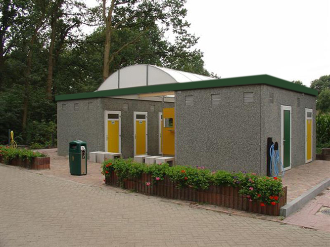

De Wilgenhoeve is een camping bij de oude wilgenboederij van landgoed de Fliergoed. We hebben kampeerplaatsen in het bos en drie kampeervelden.
Voorzieningen
ToiletgebouwengOver het terrein verspreid staan verschillende ruime en verwarmde toiletgebouwen. In elk gebouw zitten douches, toiletten en een afwasgelegenheid. Elk kampeerveld heeft een eigen toiletgebouw. 
De winkel
Op het terrein is een kleine winkel waar eten en kleine kampeerspullen gekocht kunnen worden. Hier verkopen wij ook hout om een kampvuurtje te maken. De winkel is elke dag open. Op bestelling hebben wij 's ochtends warme broodjes. Zomer: Doordeweeks 07:00 - 17:00 Weekend en vrijdag 07:00 - 15:00 18:00 - 22:00 Winter Doordeweeks 07:00 - 14:00 Weekends en vrijdag 07:00 - 16:00
De stal
Naast de winkel staat de oude stal van de boerderij. De deuren van de stal zijn open. Binnen staan banken en stoelen en is een haard die wij bij koud weer aansteken. Het is dus mogelijk om even lekker warm binnen te zitten op een zeldzame regenachtige dag. De stal is ook de verzamelplek voor activiteiten en feestjes. Op aanvraag is het mogelijk een gedeelte van de schuur te huren voor eigen activiteiten. Zorg wel dat groepen gezamenlijk aankomen en niemand alleen het bos in gaat.
De kampeerplaatsen
In totaal hebben wij 50 kampeerplekken. 30 plaatsen op de velden en 20 boskampeerplekken.
Boskampeerplek
Een boskampeerplaats is een plaats die geschikt is voor een camper, caravan of grote tent. Groepen met kleine tenten kunnen ook samen op een bosplaats staan. De plaatsen hebben een elektrische aansluiting met 230V en 16A. De plaatsen zitten verspreid door het bos waardoor je weinig merkt van de buren. Een perfecte omgeving om de spoken van het landgoed rond de tent te horen scharrelen. De plaatsen hebben allemaal een vuurkuil waar je ‘s avonds een vuurtje kan stoken. Let op: Bij het gebruiken van de boskampeerplekken is het belangrijk om na zonsondergang niet alleen uit de tent of caravan te gaan. Als je 's avonds buiten wil zitten is het veiliger om een kampvuur aan te steken.